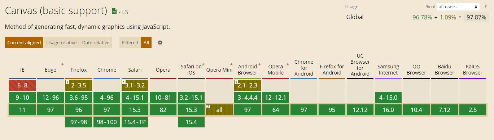
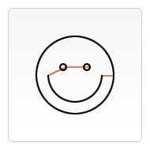

CANVAS
Created by Pavel Puchinski
WHAT IS CANVAS?
The canvas element is part of HTML5 and allows for dynamic, scriptable rendering of 2D shapes and bitmap images. It is a low level, procedural model that updates a bitmap. HTML5 Canvas also helps in making 2D games.
HISTORY
Canvas was initially introduced by Apple for use in their own Mac OS X WebKit component in 2004,powering applications like Dashboard widgets and the Safari browser. Later, in 2005 it was adopted in version 1.8 of Gecko browsers, and Opera in 2006, and standardized by the Web Hypertext Application Technology Working Group (WHATWG) on new proposed specifications for next generation web technologies.
USAGE
A canvas consists of a drawable region defined in HTML code with height and width attributes. JavaScript code may access the area through a full set of drawing functions similar to those of other common 2D APIs, thus allowing for dynamically generated graphics. Some anticipated uses of canvas include building graphs, animations, games, and image composition.
BROWSERS SUPPORT
Сanvas emulation for older browsers ExplorerCanvas
EXAMPLE CODE
HTML
JS
const example = document.getElementById('example');
const context = example.getContext('2d');
context.fillStyle = 'red';
context.fillRect(30, 30, 50, 50);
DRAWING
Canvas only supports two primitive shapes: rectangles and paths (lists of points connected by lines). All other shapes must be created by combining one or more paths. We have an assortment of path drawing functions which make it possible to compose very complex shapes.
Drawing rectangles
fillRect(x, y, width, height) // Draws a filled rectangle
strokeRect(x, y, width, height) // Draws a rectangular outline
clearRect(x, y, width, height) // Clears rectangular area
Example
function draw() {
const canvas = document.getElementById('canvas');
if (canvas.getContext){
const ctx = canvas.getContext('2d');
ctx.fillRect(25,25,100,100);
ctx.clearRect(45,45,60,60);
ctx.strokeRect(50,50,50,50);
}
}

Drawing paths
beginPath() // Creates a new path
//Path.methods - Methods to set different paths for objects
closePath() // Adds a straight line to the path, going to
// the start of the current sub-path
stroke() // Draws the shape by stroking its outline
fill() // Draws a solid shape
// by filling the path's content area
Drawing path example
function draw() {
const canvas = document.getElementById('canvas');
if (canvas.getContext) {
const ctx = canvas.getContext('2d');
ctx.beginPath();
ctx.arc(75, 75, 50, 0, Math.PI * 2, true); // Outer circle
ctx.moveTo(110, 75);
ctx.arc(75, 75, 35, 0, Math.PI, false); // Mouth
ctx.moveTo(65, 65);
ctx.arc(60, 65, 5, 0, Math.PI * 2, true); // Left eye
ctx.moveTo(95, 65);
ctx.arc(90, 65, 5, 0, Math.PI * 2, true); // Right eye
ctx.stroke();
}}
Screenshot
Live sample
Animation
BASIC ANIMATION STEPS
- Clear the canvas
- Save the canvas state
- Draw animated shapes
- Restore the canvas state
CONTROLLING AN ANIMATION
SCHEDULED UPDATES
setInterval(function, delay) // no user interaction
setTimeout(function, delay) // use keyboard or mouse events
requestAnimationFrame(callback) // user interaction
ANIMATION CODE EXAMPLE
let canvas
let canvasContext
let increment = 0
let speed = 5
window.onload = function() {
canvas = document.getElementById('animationCanvas');
canvasContext = canvas.getContext('2d');
setInterval(drawEverything, 50);
}
function drawEverything() {
bounce()
increment = increment + speed;
canvasContext.fillStyle = 'black';
canvasContext.fillRect(0,0,canvas.width,canvas.height);
canvasContext.fillStyle = 'blue';
canvasContext.fillRect(increment,200,10,10);
canvasContext.fillStyle = 'green';
canvasContext.fillRect(200,increment,10,10);
canvasContext.fillStyle = 'red';
canvasContext.fillRect(increment,increment,10,10);
}
function bounce(){
if(!increment > 0) {
speed = -speed
}
if(increment > 400) {
speed = -speed
}
}
beautiful examples of using canvas


LIBRARIES
The Canvas API is extremely powerful, but not always simple to use. The libraries listed below can make the creation of canvas-based projects faster and easier.
The end
Thank you for your attention